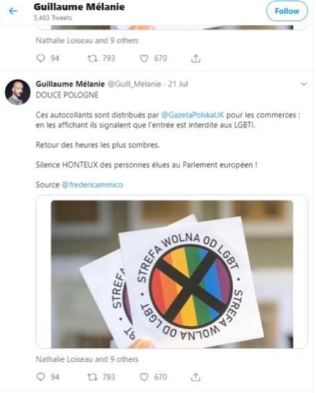

Le procès en homophobie de la Pologne après l’ultime provocation du lobby LGBT à Bialystok
par Olivier BAULT
« Pologne : une gay pride attaquée par des ultranationalistes1 », titrait Le Figaro le 21 juillet pour illustrer une vidéo des moments les plus chauds publiée sur le site du journal le soir-même des troubles qui avaient agité la ville de Białystok, dans l’est de la Pologne, le samedi 20 juillet. Pour Le Monde2, « Une Marche des fiertés LGBT à Białystok, bastion nationaliste en Pologne, vire au cauchemar » (titre du 22 juillet) :
« Dans la région très conservatrice de la Podlachie, soixante contre-manifestations – nationalistes, ultra catholiques, parfois violentes – ont été signalées ».
Ce que les deux grands quotidiens français ne précisent pas, c’est que la « Marche des égalités » de Białystok était l’ultime provocation du lobby LGBT en Pologne3. Un lobby peu nombreux mais massivement soutenu par les multinationales et les ambassades occidentales dans ce qui ressemble fort à une entreprise de colonisation culturelle du dernier grand pays majoritairement catholique du vieux continent. Ce lobby bénéficie aussi ces derniers temps du virage progressiste-libertaire tenté par l’opposition libérale polonaise, ce qui a sans doute fortement contribué4 à sa cuisante défaite aux élections européennes face au PiS.
Les militants LGBT ont beaucoup œuvré cette année pour remonter un grand nombre de Polonais contre eux, avec leurs profanations contre la foi catholique à Gdańsk (parodie de procession du Saint-Sacrement), Varsovie (parodie de messe) et Częstochowa (tentative de marche sur le sanctuaire de Jasna Gora au moment où s’y déroulait un pèlerinage d’enfants), sans parler les images de l’icône de la Vierge noire de Częstochowa repeinte avec une auréole aux couleurs de l’arc-en-ciel LGBT qu’ils brandissent régulièrement dans leurs manifestations depuis le printemps.
Białystok est au cœur d’une région conservatrice, comme l’est toute la partie orientale du pays où le parti social-conservateur Droit et Justice, qui gouverne la Pologne depuis 2015, est nettement mieux implanté que dans la moitié ouest. C’était donc l’endroit idéal pour organiser la première gay pride de l’histoire en sachant que beaucoup s’y opposeraient. Car le but du lobby LGBT en Pologne semble bien de causer les réactions les plus vives possibles afin de pouvoir se présenter en victimes de violences et de discriminations. Or si cela doit obligatoirement passer par une stratégie de la provocation permanente, en s’attaquant aux symboles les plus sacrés, cela montre bien que la société polonaise est de nature plutôt tolérante.
À Białystok, ville d’un peu moins de 300.000 habitants, une pétition de 20.000 habitants avait demandé l’interdiction de cette gay pride, mais le maire, du parti libéral Plateforme civique (PO, ce qui montre aussi que la ville n’est pas elle-même aussi conservatrice que cela) l’a autorisée quand même. Du reste, même quand des maires ou des voïvodes (les équivalents polonais des préfets) tentent d’interdire ce genre de manifestations LGBT, les tribunaux polonais renversent leur décision et les autorisent. Mais le succès de la pétition contre la « Marche des égalités » montre qu’il n’y avait pas que des nationalistes venus de toute la Pologne pour s’opposer à la manifestation de quelques centaines d’activistes sans doute venus eux aussi de tout le pays. On voit en effet souvent les mêmes visages avec les mêmes accoutrements dans les différentes gay prides organisées en Pologne, et certains critiques parlent même, pour les désigner, de troupe de cirque ambulant.
En fait, plusieurs dizaines de contre-manifestations avaient été annoncées, dont une contre-manifestation de supporters de foot de toute la Pologne qui avaient, ainsi qu’on l’apprenait quelques jours avant dans les médias nationalistes, passé un pacte de non-agression entre eux pour aller « défendre la ville contre les pervers », car « tous ont vu leurs homoparades à Varsovie, Gdańsk et Częstochowa où les symboles religieux de la foi chrétienne ont été ouvertement profanés et moqués. Nous ne pouvons pas permettre que des clowns déguisés fassent la même chose à Białystok! »
Alors certes il y a eu quelques excès, car ces supporters de foot ne sont pas des manifestants comme les autres, mais la police polonaise, présente en nombre, a bien fait son travail et il n’y a pas eu de blessés. La Pologne étant une démocratie et un État de droit, n’en déplaise à Bruxelles, les auteurs des violences ont été arrêtés ou sont encore recherchés et ils seront jugés. Certains médias de gauche ont voulu faire un parallèle entre les supposées violences contre les homosexuels en Pologne et les « heures les plus sombres de notre histoire », en publiant la photo du visage ensanglanté d’une jeune femme. Manque de chance, il s’est avéré qu’il s’agissait d’une contre-manifestante qui avait tenté d’arracher son petit ami des mains de la police et qui avait pris un coup dans la mêlée.
Une autre polémique est par ailleurs venue s’ajouter cette semaine aux événements de Białystok, avec l’hebdomadaire conservateur Gazeta Polska, proche du PiS, qui a distribué avec son numéro de mercredi des autocollants « Zone libre d’idéologie LGBT », en encourageant ses lecteurs à les apposer bien en vue.
Pour Le Figaro5, il s’agit « d’autocollants anti-gays », alors que les auteurs de cette action précisent bien qu’ils cherchent à lutter contre l’idéologie que le lobby LGBT voudrait imposer à la Pologne, et non pas contre les personnes homosexuelles. « Respectons les personnes, opposons-nous au totalitarisme » : tel est le titre de l’éditorial6 qui accompagne cette action de Gazeta Polska.
À cet égard, on pouvait lire dans le Checknews de Libération7 que :
« En Pologne, où il est devenu légal de refuser l’entrée d’un magasin à une personne LGBTI [lesbienne, gay, bisexuelle, trans, intersexe, ndlr], certains distribuent désormais des stickers “zone réservée aux hétéros” », écrit ce lundi sur Twitter l’eurodéputée France insoumise Manon Aubry. Elle renvoie vers un tweet du coprésident d’Urgence homophobie8 qui s’indigne, photo à l’appui, qu’un média polonais distribue « pour les commerces » des autocollants signalant que « l’entrée est interdite aux LGBTI ».
En fait, ainsi que l’explique assez bien Libération, il n’est pas « devenu légal en Pologne de refuser l’entrée d’un magasin à une personne LGBTI », mais un jugement récent du Tribunal constitutionnel a donné raison à un imprimeur qui avait refusé de produire des brochures commandées par une organisation LGBT avec un contenu qui révoltait sa conscience chrétienne. Quant aux autocollants « zone réservée aux hétéros », ils mentionnaient en fait dans leur première version annoncée à l’avance par Gazeta Polska : « Zone libre de LGBT » (en polonais : strefa wolna od LGBT »). Face au tollé que cela a soulevé en Pologne, y compris de la part de membres du gouvernement, le journal a modifié le texte prévu et a en fait distribué des autocollants portant l’inscription « Zone libre d’idéologie LGBT » (en polonais : « strefa wolna od ideologii LGBT ») afin de lever l’équivoque, en insistant toujours sur le fait que c’était bien le sens voulu dès le départ.
En ce qui concerne les événements de Białystok, l’Église polonaise elle-même a condamné les attitudes agressives par la voix du porte-parole9 de la conférence des évêques. Celui-ci a rappelé que les personnes LGBT « ne sont pas en premier lieu des gays, des lesbiennes, des bisexuels ou des transsexuels, mais ils sont avant tout nos frères et sœurs pour lesquels le Christ a sacrifié sa vie et qu’il veut sauver ». Cependant, a-t-il ajouté, « au nom de la fidélité à notre Sauveur et au nom de l’amour pour nos sœurs et nos frères, nous devons annoncer l’Évangile, sans chercher à éviter les exigences qu’elle porte et sans cesser d’appeler péché mortel ce qui est péché mortel. Si nous ne le faisions pas, nous priverions nos prochains de la Vérité à laquelle ils ont droit ».
Notons pour finir que Le Monde, Le Figaro et consorts sont moins diserts quand il faudrait relater le licenciement par Ikea Pologne d’un catholique polonais qui refusait de participer aux actions de propagande LGBT mises en œuvre par son employeur.
Partager cette page